RocketMQ LiteTopic：轻量队列模型
与百炼平滑限流实战
从"限流为什么难"讲起，经过漏桶与消息队列的基础补课，逐层拆解 LiteTopic 的四个特性与 Suspend 机制， 再完整复盘两个生产案例（百炼网关限流比降 10 倍、资产中心一人一 Topic），最后拓展到异步会话网关与系统间 Agent 协作。 内含一个可动手调节的多租户限流模拟器，让你亲眼看到"Sleep 传染"与"Suspend 隔离"的区别。
学习路线
- 问题背景 —— GPU 稀缺时代，限流从防御题变成资源调度题
- 前置知识 —— 限流算法、RocketMQ 架构与数据流、消费模型边界、漏桶为什么要外置
- LiteTopic 机制 —— 四特性、Ready Set、Suspend vs Sleep（含模拟器）
- 案例一 —— 百炼网关：分布式漏桶矩阵，限流比降 10 倍
- 案例二 —— 资产中心：一人一 Topic 的用户级治理
- 拓展一 —— 异步会话网关：会话粘性与故障恢复
- 拓展二 —— OpenClaw Channel：系统间异步协作
- 总结自测 —— 决策回顾、10 道自测题、术语表、参考资料
阅读建议：第 2 章是补课，已有 MQ 与限流基础可跳过；第 3 章的模拟器建议亲手调一遍参数；每章末尾的"本节要点"用于复习。
问题背景：大模型网关的限流为什么难
先建立全局认知：这一章回答"为什么传统限流不够用"，是后面所有设计决策的出发点。
1.1 GPU 稀缺改变了限流的目标
过去十年 CPU、内存、带宽都能分钟级甚至秒级弹性扩容，互联网限流主要解决"防刷"和"防雪崩"。 进入大模型时代，GPU 扩容周期长、单价高、供给受硬件交付节奏制约——"GPU 池子有多大"几乎直接决定"今天能服务多少客户、能承诺多高的 SLA"。 百炼是阿里云的大模型服务平台，承载百万级用户同时调用千问等数十种大模型；作为国内最大的公有云模型推理入口之一， 每一次限流误判意味着用户侧超时、重试甚至业务中断，每一次过载放行意味着稀缺 GPU 算力浪费和其他租户体验劣化。网关实践文章
因此网关要在有限 GPU 池里同时兑现三件事：
| 承诺 | 含义 | 反面后果 |
|---|---|---|
| 租户级流量隔离 | 各租户流量相互隔离，防止争抢与干扰 | 个别租户突发拖垮所有人 |
| 精细化配额限流 | 租户维度差异化配额，只限超额请求 | 未达配额的用户被误伤 |
| 平滑突发与资源统筹 | 削峰填谷，在有限池内统筹分配 | 尖峰打爆 GPU 或大面积 503 |
百炼面对的不是单一限流场景，而是三类叠加：基于 SLA 承诺的基础限流（要稳定、可计量、可观测）； 用户之间及客户内部多账号的细粒度管控（User + Model 维度交叉约束）；超大客户的扩容与突发承接 （额度调大后突发真来时 GPU 扩容到位前顶不住——硬限大面积 503，放行又过载殃及他人）。 三者交织意味着限流不只是"决定放不放过"，更要回答"放过去之后以什么节奏喂给后端"。网关实践文章
1.2 AI 应用与传统互联网应用的四个差异
消息中间件团队从传统互联网架构演进到 AI 应用架构，总结出四个差异，它们直接决定了消息系统要改什么：周礼分享讲稿
| 维度 | 传统互联网应用 | AI Agent 应用 | 对消息系统的要求 |
|---|---|---|---|
| 行为模式 | 流程由代码预编排，可预知；同类请求耗时相近（毫秒级） | 模型自主执行，同一问题不同上下文结果不同，是"未知系统" | 不能按同类任务假设做共享队列 |
| 任务时长 | 毫秒级（PPT 口径约 0.1s，短且固定） | 分钟级甚至数小时、数天（PPT 口径 3–15s+，长且不可预知） | 队列更容易堆积，单条慢消息造成队头阻塞：FIFO 下对头消息出不去，后面所有人全卡住；传统预警阈值失效，运维监控需重新校准 |
| 交互方式 | 工作流一步步推进 | 人以聊天方式多轮迭代上下文 | 需要会话级状态管理与会话粘性（上下文落在同一通道/节点） |
| 运营成本 | CPU 近似无限扩，"能靠扩容解决的都是好架构" | GPU 成本高、扩不动 | 隔离与调度必须精细，不能靠加机器换隔离 |
1.3 行业信号：异步化是 2026 年的共同方向
讲稿中引用了两个头部厂商的公开路线，说明"异步化"不是某家的定制需求：周礼分享讲稿
- MCP 2026 年 3 月 roadmap：不再以里程碑式发布，转为四个优先级领域，前两条与分布式系统直接相关——扩展 transport、让 MCP Server 方便水平扩展。 旧 SDK 没解决会话管理：多轮会话状态存在单节点上，请求不落在同一台机器就丢上下文，也因此无法水平扩展。 其实验性 Task 方案（创建 task → 轮询状态 → 取回结果）也承认未定义失败重试与超时过期策略。
- Google：官方博客提到企业级长任务可能"停好几天"，需要事件驱动机制；A2A 协议做多 Agent 异步分发。 Anthropic 的 managed agents 文章提出把 session 外化（session log），可随时 get session / get event 在任意节点恢复——即在线会话化 + checkpoint 故障恢复。
归纳成四条需求（PPT 称之为"下一代 Agent 通信底座的四块基石"）：会话状态分散存储（告别单实例内存瓶颈）、 长任务调度必须异步 + 事件驱动、故障自动恢复（会话不丢、任务可续）、多 Agent 协作依赖可靠消息传递。 PPT 的结论句："两份路线图，一个共同结论——异步，是 Agent 时代的新共识。" 这正是 LiteTopic 与第 6 章异步会话网关要回答的问题。PPT s02
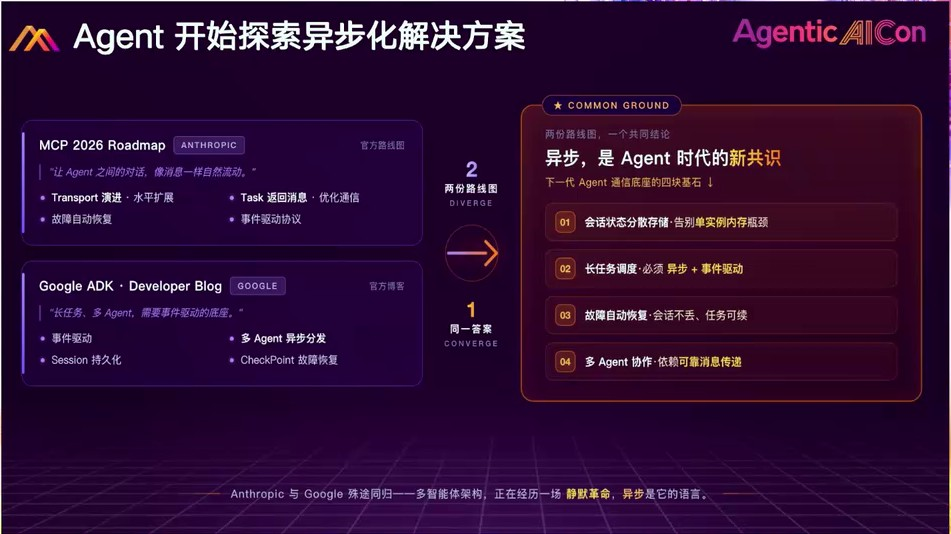
前置知识：限流算法、RocketMQ 架构与消费模型
补课章。先补 RocketMQ 的整体架构与数据流，再理解"固定窗口 + 漏桶"的选型理由，以及传统 Topic/Group 模型的能力边界。
2.1 四种限流算法速览
本表为通用限流知识补课（非素材原文），用于理解下一段的选型理由；选型理由本身来自网关实践文章。
| 算法 | 机制 | 突发态度 | 适用 |
|---|---|---|---|
| 固定窗口 | 每个时间窗口计数，超阈值拒绝，窗口结束清零 | 对短期波动宽容（窗口边界可能放过两倍突发） | 硬上限、配额计量 |
| 滑动窗口 | 窗口随时间滑动精确计数 | 严格，边界突发也被精确计算 | 需要精确平滑计数 |
| 令牌桶 | 匀速发令牌，请求拿令牌才放行，桶里攒的令牌允许一次突发 | 天然允许突发 | 下游能扛尖峰的场景 |
| 漏桶 | 请求先入桶排队，匀速流出，桶满才拒 | 整形为匀速，尖峰被攒起来慢慢放 | 下游稳态友好、尖峰敏感（如 GPU） |
百炼的最终选型是固定窗口 + 漏桶，理由非常具体：网关实践文章
- 固定窗口而非滑动窗口：滑动窗口更严格，边界突发也被精确计算；固定窗口对短期波动更宽容——配额语义下"宽容一点"反而减少误伤。
- 漏桶而非令牌桶：漏桶匀速放行契合 GPU 这种稳态友好、尖峰敏感的下游；令牌桶天然允许突发，恰恰是 GPU 最怕的形态。
2.2 漏桶为什么必须搬到进程外
算法选定后新问题随之而来：超大客户的突发流量如果堆在网关进程内存里，几十万请求会立刻把网关本身打挂。 漏桶必须从进程内搬到进程外，用一个足够大、足够隔离的外部存储承接缓冲，把"接住请求"和"按节奏放行"在物理上拆开。 消息队列是天然候选——但要进一步追问三个问题：能否支持百万级队列？能否运行时按需创建？流控粒度是否足够精细？ 传统 RocketMQ Topic 对这三个问题的答案都不理想，于是 LiteTopic 进入视野。网关实践文章
2.3 RocketMQ 基础：角色、架构与数据流
本节为通用 RocketMQ 知识补课（非素材原文）：先建立全景，2.4 再看这套模型的能力边界，第 3 章看 LiteTopic 改在哪里。
角色与概念一览
| 概念 | 一句话定义 | 在本案例中的角色 |
|---|---|---|
| Producer | 消息发送方，经 NameServer 发现 Broker 路由后直连发送 | 百炼网关发送侧 |
| Consumer | 消息接收方；Push 模式实质是"SDK 拉取 + 业务回调" | 统一消费 Pod 组 |
| Consumer Group | 行为一致的一组消费者，负载均衡与消费进度管理的单位 | 整个消费组共享一次通配订阅 |
| Topic | 消息的一级逻辑分类；逻辑概念，物理上以队列分散在多个 Broker | 父 Topic 是真实的传统 Topic |
| 队列（MessageQueue） | Topic 的物理分片，FIFO、并发与隔离的单位 | 传统隔离单元；LiteTopic 把它下沉到用户/会话 |
| Tag | Topic 内二级分类，供消费过滤 | 案例中通配 "*" 即不过滤 |
| Offset | 消费进度坐标：消息在队列中的位置 | 断线/宕机后续传的凭据 |
| Broker | 消息存储与转发服务器：写 CommitLog、主从复制、响应拉取 | 漏桶矩阵的物理载体 |
| NameServer | 无状态路由注册中心：Broker 注册、客户端发现，节点互不通信 | 传统 Topic 创建生效慢的根源之一 |
整体架构：控制面与数据面
全系统只有四类角色。NameServer 是路由注册中心：每个节点持有全量路由，节点之间互不通信、没有选举，挂一台换一台即可。 Broker 启动时把自己的 Topic/队列信息注册到所有 NameServer，之后每 30s 心跳维持；Producer 与 Consumer 每 30s 从 NameServer 拉取路由并本地缓存，NameServer 不主动推送。 这套"注册 + 轮询"的控制面决定了一个工程事实：新建 Topic 后要等 Broker 注册、客户端轮询都跟上才生效，量级是几十秒——这正是第 4 章旧方案"元数据重、生效慢"痛点的根源。
数据面不经过 NameServer：Producer 拿到路由后直连 Broker 发送，Consumer 也直连 Broker 拉取。 Broker 集群内 Master 负责读写，Slave 从 Master 复制、可接管读（自动主从切换需 DLedger 模式）。 一个 Topic 的队列分散在多个 Broker 上，因此发送与消费天然分布式——也意味着"队列"才是物理隔离与并发的单位，Topic 只是逻辑名字。
存储：CommitLog 与 ConsumeQueue
RocketMQ 的存储分两层。CommitLog 是消息体本身：所有 Topic 的消息混合顺序追加到同一组文件（默认 1G 滚动），把磁盘写变成顺序写——这是高吞吐的根源。 ConsumeQueue 是按队列构建的消费索引：每条条目仅 20 字节（CommitLog 偏移 + 消息大小 + Tag 哈希），消费侧先读索引定位、再回 CommitLog 取消息体； IndexFile 是可选的按消息 key 反查索引。这套设计的代价是消费读偏随机（靠 page cache 缓解），换来写侧永远顺序、"多一个队列"只多一份轻量索引。
发送侧数据流
- 路由发现：Producer 从 NameServer 拉取"该 Topic 在哪些 Broker、各有几个队列"，本地缓存、30s 刷新。
- 选队列：默认轮询各队列摊开负载；顺序消息按 ShardingKey 哈希固定到某一队列（见 2.4）。
- 发往 Master：同步 / 异步 / oneway 三种语义；同步发送失败默认换一台 Broker 重试。
- 落盘：Master 追加 CommitLog，写入 page cache 即返回成功（刷盘可配同步 / 异步）；随后异步 dispatch 构建 ConsumeQueue 与 IndexFile。
- 复制：Slave 从 Master 拉取复制；同步双写要等 Slave 确认才向 Producer 返回成功，用延迟换主从切换不丢消息。
消费侧数据流
- 路由发现：与发送侧相同，拉取并缓存 Topic 的队列列表。
- 分队列：4.0 Pull 模式客户端做 rebalance——把 Topic 的队列平均分给 Group 内各实例，每 20s 或实例增减时重算；5.0 Pop 模式由 Broker 侧派发消息，客户端无状态、不再 rebalance。
- 拉取：SDK 按 offset 向 Broker 拉消息；无消息时 Broker 用长轮询 hold 住请求，新消息到达立即返回——Push 的实时感由此而来。
- 业务回调：PushConsumer 对外是回调接口，内部仍是拉取循环；第 4 章的限流回调就插在这一步。
- 进度提交：消费成功提交 offset；集群模式进度存 Broker 侧，实例重启后从原位置继续——这是"断点续传"的凭据。
- 重试与死信：消费失败的消息进入重试主题
%RETRY%+Group按退避间隔重投；默认 16 次仍失败进入死信主题%DLQ%+Group，等待人工处理。
两种消费模式，与 LiteTopic 的变与不变
集群消费：一条消息只被 Group 内一个实例消费，进度存 Broker——默认模式，也是案例所用；广播消费：每个实例都消费全量，进度存本地，适合本地缓存刷新这类场景。 传统模型还有订阅一致性、队列级顺序两条刚性约束，它们的边界在 2.4 讨论。
对照这张全景图，LiteTopic 的改动集中在元数据与订阅层，而非存储层：消息仍落同一套 CommitLog，路由仍走 NameServer——所以父 Topic 必须是真实传统 Topic、要预创建； 变轻的是其下的队列（自动创建、TTL 回收、百万级），变灵活的是订阅（同 Group 不同实例订不同子集），拉取侧新增的是 Suspend 开关。 理解"什么没变"，才能理解它为什么能平滑长在现有 RocketMQ 生态上。
2.4 传统消费模型的能力边界
有了 2.3 的全景，再看这套模型（RocketMQ 为 Apache 顶级项目，传统模型与 Kafka 等一致）在"每个用户/每个会话一条独立通道"场景下的边界：周礼分享讲稿
- 隔离单元是队列：队列内 FIFO、队列间并发（机制见 2.3），治理只能到队列级，到不了"用户"。
- Group 共享消费：队列被组内机器分摊，请求落到任意一台；4.0 是队列分配 Pull，5.0 是无状态 Pop。PPT s07
- 订阅一致性约束：同一 Group 下所有客户端必须订阅完全相同的 Topic 集合，否则订阅不一致会导致堆积甚至丢失。
- 顺序消息：同一业务 ID 哈希到固定队列保证顺序，但不同业务 ID 可能共享同一队列。
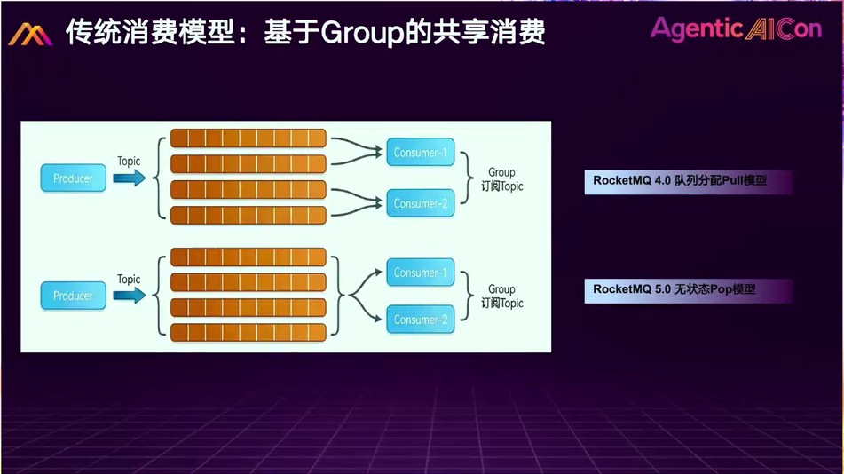
这套模型服务"少量 Topic、同类任务"没有问题；但当你要给每个用户/每个会话一条独立通道时，三个痛点暴露（第 4 章详述）： 元数据重、创建生效慢；订阅一致性逼你"一客户一组机器"；共享队列的株连效应。 沙龙 PPT 给出的量级对比：传统 Topic 商业实例上限约 3,000，而 LiteTopic 支撑 20 万～千万级。沙龙报告 3 PPT
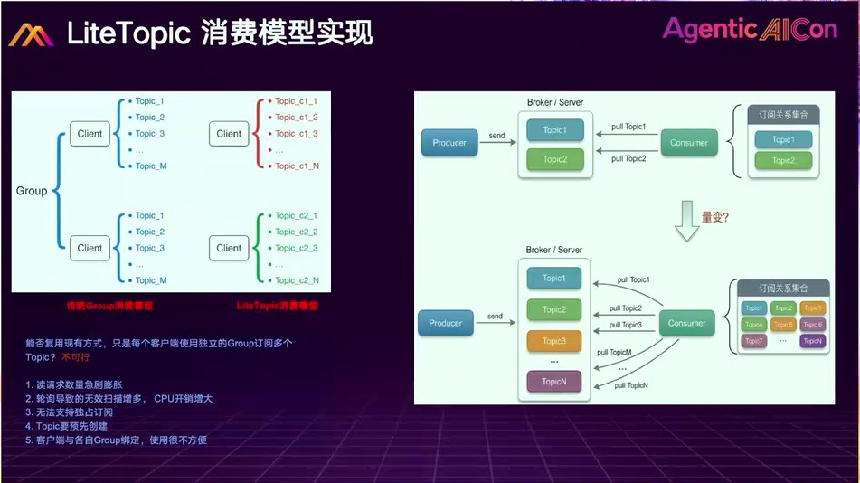
LiteTopic 机制详解：把重资产变成轻资产
本章是技术核心：四个特性 + 两个工程机制（Ready Set、Suspend），并用模拟器亲手验证。
3.1 定义与四个核心特性
LiteTopic 是 RocketMQ 5.x 引入的轻量级队列形态，定位为面向 AI Agent 场景的轻量异步消息/事件载体。 它挂在父 Topic（Parent Topic）之下：传统 Topic 一个都不用多建，建一个父 Topic，其下全部用 LiteTopic 承载。讲稿 / 沙龙 PPT
| 特性 | 机制 | 与传统 Topic 的差异 |
|---|---|---|
| 动态创建与销毁 | 发送时队列不存在即自动创建；不活跃超 TTL 自动回收，释放配额，资源零泄漏 | 传统需预创建、审批、配路由，生效几十秒量级 |
| 低成本·海量规模 | 单 Broker 百万级队列；单客户端可订阅上万个 LiteTopic | 传统商业实例约 3,000 Topic 上限 |
| 差异化订阅 | 同一 Group 下不同实例可订阅不同 LiteTopic 子集，不引发堆积或丢失；订阅从"刚性约束"变"按需路由" | 传统要求组内订阅完全一致 |
| 顺序消费 | 单个 LiteTopic 天然 FIFO；需要并发时按名字拆分队列（如 user-1 / user-2），拆分零成本 | 传统顺序消息靠 ShardingKey 哈希，不同业务可能共享队列 |
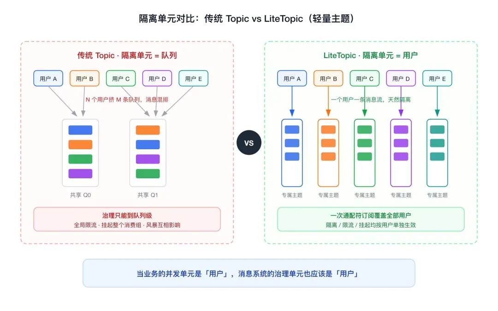
3.2 Ready Set：百万订阅下的事件驱动拉取
同时几十万 User + Model 并发是日常态。若沿用"对每个订阅的 LiteTopic 各发起一个独立 Pull 循环"的传统做法， 开销随订阅数线性增长——本质和 select/poll 一样：每次调用遍历全量集合，大部分遍历无效。网关实践文章
LiteTopic 在 Broker 侧引入就绪集合（Ready Set）事件驱动机制，思路类似 epoll：每个客户端有自己的 ready set， 只有真正有新消息写入的 LiteTopic 才进入集合；Pull 时 Broker 只读取就绪队列，集合为空则长轮询等待事件触发 （新消息到达、ACK 后仍有未消费消息、顺序锁释放等）。Pull 开销只与"当前时刻就绪的队列数"成正比，而非总订阅数。文章 / 讲稿
PPT 把这套订阅拉取模型拆成四步：① 订阅关系注册——客户端增加/删除订阅注册到服务端、分片存储； ② 百万队列——每个 LiteTopic 对应一个逻辑队列，消息存储时自动创建；③ 事件分发——每个客户端有专属事件队列，按订阅关系集合批量分发； ④ 事件读取——一个客户端的读取请求归一化，不必为每个 LiteTopic 发起读请求，直接读事件队列减少开销。 设计原则一句话：数据面与控制面分离、推拉结合、事件驱动。PPT s10
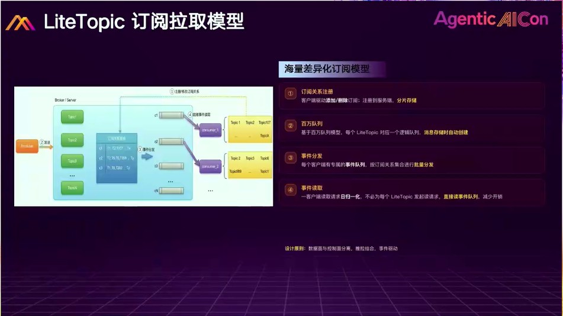
3.3 Suspend：Broker 级拉取流控
业务在消费回调中返回 Suspend N（毫秒），Broker 即在 N 毫秒内暂停对该 LiteTopic 的拉取，
且不影响其他 LiteTopic 的拉取节奏；到期自动恢复。这是漏桶在 Broker 层落地的关键开关。网关实践文章
它与"消费线程 Sleep"的本质区别在于谁为等待买单。PPT 还点出一个容易忽略的前提： 传统"抢占 + 线程池"架构下，线程被长耗时任务占用就无法释放——即使队列已经物理隔离，仍会导致资源卡死； 所以隔离必须配合非阻塞线程池模型才完整。PPT s11
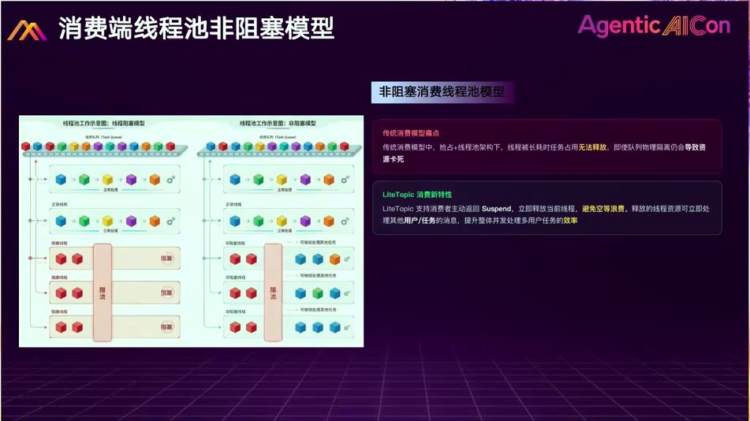
Thread.sleep(N)：线程级阻塞
被限流的队列占住一个消费线程不释放。多租户共享线程池时，限流会传染：被限流队列越多，空闲线程越少， 正常租户拿不到线程而堆积——限流伤到了不该被限流的人。
Suspend N：Broker 级流控
消费线程返回后立即释放回线程池，转头服务其他队列；被 Suspend 的队列由 Broker 在 N 毫秒后重投， 等待期间不占客户端任何线程。无论多少租户被限流，剩余租户始终有空闲线程可用。
POC 对比（订阅 50 个 LiteTopic、线程池 50 线程、前 5 个随机触发 300ms 限流）：网关实践文章
- Sleep 300：被限流数增至 40 个时线程池几乎耗尽，剩下 10 个正常 LiteTopic 拿不到线程全部堆积。
- Suspend 300：仅被限流的 5 个堆积，其余 45 个正常。
精度与组合：当前 Suspend 最小粒度 30 毫秒；更细的速率控制由消费侧局部 Sleep 补充（亚毫秒级节奏控制，持续时间极短、对线程池影响可控）。 百炼实际是两者组合：Suspend 承担主要漏桶调速，Sleep 只在极少数亚 30ms 精度场景补充。 若目标速率非常高，要把 Suspend 步长与并发线程数放在一起算实际放行速率，避免阶梯感传导到 P99 RT。网关实践文章
3.4 动手实验：多租户限流模拟器
下面的模拟器把上述机制做成可调节的实验台：每个租户一条队列（一个漏桶），共享一个消费线程池。 切换 Suspend / Sleep / 直接拒绝 三种模式，观察"限流传染"是否发生；给某个租户注入突发，看隔离是否成立。所有参数即时生效。
多租户漏桶实验台
参数（即时生效）
3.5 性能数据与边界（来自 POC 与现场 Q&A）
| 指标 | 数据 | 来源 |
|---|---|---|
| 海量订阅消费延迟 | 单 Broker 200 客户端 × 1 万 LiteTopic（共 200 万队列），平均消费延迟稳定 12ms；讲稿口径 10–20ms | 文章 POC / 讲稿 |
| 单通道消费 QPS | 顺序消费口径约 8,000–10,000 / 秒 / 通道 | 现场 Q&A |
| 端到端时延 | 与传统顺序消息无明显差别；比普通并发消费慢约 5–10ms | 现场 Q&A |
| 单通道写入峰值 | 低于传统多队列 Topic；解法是按名字零成本拆分（user-1 / user-2 / user-3） | 现场 Q&A |
| Ready Set 代价 | 内存换时间：内存消耗比轮询模型高，但抹平了时间开销；几千到十万队列规模下开销与传统基本无区别 | 现场 Q&A |
百炼网关：分布式漏桶矩阵，限流比降 10 倍
完整复盘：旧方案三痛点 → 重构架构 → 三段代码 → 策略实例 → 工程经验。
4.1 旧方案：一客户一 Topic，为什么撑不住
百炼最早的做法：为每个 User + Model 单独建 Topic 与 Consumer Group，再部署一组消费机器专门负责这条链路。 头部客户陆续接入后三个痛点暴露：网关实践文章
- 元数据重、生效慢：传统 Topic/Group 需预创建，生效几十秒量级，新用户突发到来时出现短时间异常。
- 机器利用率低、成本随客户数膨胀：订阅一致性要求同 Group 订阅完全相同，要隔离就得每客户单独建 Group 甚至切机器；客户今天零消息，名下机器仍要常驻。
- 单 Topic 暴涨的株连效应：硬把多客户塞进同一 Topic，某用户消息激增会占满几乎所有消费线程，其他用户全部阻塞；团队被迫退回"一客户一组机器"，用机器规模换隔离强度。
结论：传统方案能服务"少数几个头部突发客户"，但无法支撑"任意中大型客户自动接入漏桶"。 当限流要从"个别 VIP 待遇"变成"平台基础能力"，底层必须重新设计。
PPT 从另一侧总结了 AI 场景的五条限流需求（资源隔离／流量互不干扰／动态订阅管理／细粒度限流／平滑限流——"不是粗暴拒绝，顺延到下个窗口体验更优"）， 以及传统消费限流的三条局限：相互影响（单用户慢任务阻塞他人，无法物理隔离）、吞吐受限（限流等待 block 线程，影响整个系统吞吐量）、 队列不足（需提前创建 High/Mid/Low 等多个 Topic/队列，数量有限、粒度粗，难以支撑差异化）。PPT s16
4.2 重构架构：发送、订阅、限流各一段
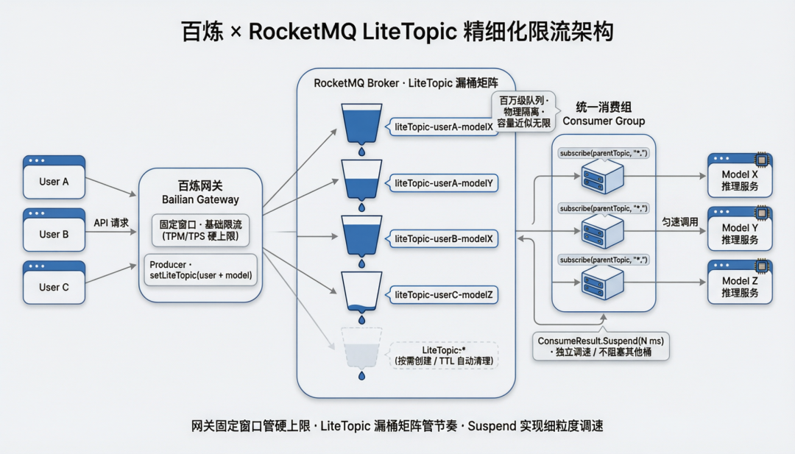
三段核心代码（简化示意，展示核心调用逻辑）：网关实践文章
// ① 网关侧：按 user + model 路由到对应 LiteTopic（新增的一行）
Message msg = new Message(parentTopic, payload);
msg.setLiteTopic(buildLiteTopicName(user, model));
producer.send(msg);
// ② 消费侧：一次通配符订阅，覆盖当前和未来所有 LiteTopic
PushConsumer consumer = new PushConsumer("bailian-rate-limit-group");
consumer.subscribe("bailian-rate-limit-parent", "*");
consumer.start();
// ③ 限流逻辑：命中策略则 Suspend，仅暂停该 LiteTopic 的拉取
@Override
public ConsumeResult consume(MessageView msg) {
String liteTopic = msg.getLiteTopic();
long suspendMs = rateLimitPolicy.acquireOrSuspend(liteTopic);
if (suspendMs > 0) {
return ConsumeResult.Suspend(suspendMs);
}
invokeModel(msg);
return ConsumeResult.SUCCESS;
}PPT 的工作流图给出两个工程细节：父 Topic 实名 rate-limit-parent-topic，其下 LiteTopic 带 Active / Suspended 消费状态
（限流中暂停消费 300ms、消息持续堆积、不影响其他 LiteTopic）；消费侧是"有资源才消费"——消费节点按 GPU 推理实例的可用算力拉取，弹性扩缩容，
限流策略由独立 RateLimiter 组件检查。PPT s19
4.3 为什么 LiteTopic 是漏桶的天然载体
PPT 用四个词概括这套能力：物理隔离（每个用户/会话独立 LiteTopic，资源完全独立、彻底消除交叉干扰）、 弹性创建（按需自动创建、支持百万级）、精准流控（每个 LiteTopic 独立执行限流策略、按用户配置差异化阈值，实现"千人千面"的个性化流量治理）、 消费挂起（超限时优雅地"请用户稍等片刻"，既保护系统资源又保证体验）。PPT s17
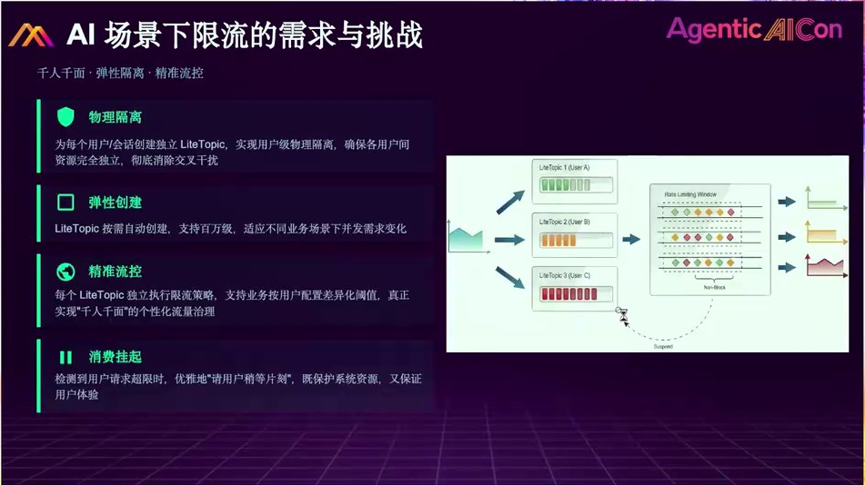
- 桶容量工程意义上近似无限：进程内漏桶容量是写死的数字、桶满即拒；LiteTopic 持久化到 Broker 磁盘、单实例百万级队列、彼此物理隔离。"等几秒再处理"几乎在所有场景下都优于"被 429"。
- 每个 User + Model 独立漏桶：租户隔离变成命名规则问题——A 的模型 X 进 liteTopic-A-X，B 的进 liteTopic-B-X；A 堵了不会通过任何共享资源传染到 B。隔离从"靠业务代码维护"变"靠基础设施天然提供"。
- 每个漏桶速率独立、动态可调：Suspend N 由业务策略实时计算，毫秒级调整任意漏桶放行速度——重要客户在高负载时仍拿较高节奏；模型扩容到位后矩阵速率同步上调；某模型拥塞只收紧对应那一列，不拖累其他模型。全程不重启消费组、不改配置、客户无感知。
4.4 策略实例：Suspend 时长就是调度语言
PPT 给出官方的四档 Suspend 策略表——Suspend 时长就是调度语言：PPT s18
| 限流级别 | Suspend 时长 | 适用场景 |
|---|---|---|
| 轻度限流 | 50 ~ 200 ms | 突发限流，平滑到下个窗口 |
| 中度限流 | 200 ~ 1000 ms | 明显降低消费速率 |
| 重度限流 | 1000 ~ 5000 ms | 接近暂停消费 |
| 忙闲调度 | 5 min ~ 8 hrs | 批量任务闲时处理 |
讲稿中的真实策略实例与之对应，帮助理解业务意图：周礼分享讲稿
| 场景 | Suspend 时长 | 业务语义 |
|---|---|---|
| 轻度限流：当前窗口额度不够 | 50–100ms | 把这波请求推到下一个窗口 |
| 明显控速：量太大 | 1–2s | 压低该用户放行节奏 |
| 优先级调度：下游资源不足、任务不重要 | 可达 10 小时 | 把白天任务移到晚上，让位给高优先级业务（集团内调用让位公有云客户） |
| 同步转异步：核心用户不接受失败 | 入专属队列慢慢消费 | 普通用户超限直接返回失败；关键用户从同步转异步排队，业务不至于有损 |
沙龙 PPT 还给出落地适配与插件化抽象：四个适配（海量：为 userId / userId+model / APIkey 建独立队列；动态：Diamond 配置入口即生效；Suspend 语义：毫秒到小时级挂起；精准订阅：放行通知回到用户连接机器），
效果为限流异常比例下降 10×；通用插件 spring-cloud-gateway-rocketmq-ratelimiter 业务方只需实现 Resolver / PostCounter 两个 SPI，其余自动装配；
五项开箱能力：削峰不阻塞、多维度同时限流、按结果计量、单机/分布式可插拔、Spring Boot Starter 一键集成。沙龙报告 3 PPT


4.5 四条工程经验
- 限流是分层组合：固定窗口管硬上限、漏桶管放行节奏、消息队列管承接缓冲，三层串联缺一不可。
- 漏桶的物理载体决定上限：突发可能压垮网关进程时，漏桶必须外置；选 MQ 要追问百万级队列、按需创建、流控粒度三问。
- 隔离是刚需，但隔离成本必须更低：LLM 一次请求消耗数秒 GPU 时间，被挤占损失的不只是成功率还有已消耗的昂贵算力；"每租户切一组机器"成本乘法膨胀不可持续。LiteTopic 让隔离强度不降、成本从乘法变回加法。
- Suspend 与 Sleep 各有适用，关键是谁为等待买单：Suspend 适合粗粒度长时间等待；Sleep 适合极短的处理等待（亚 30ms 精度补充）。
百炼资产中心：一人一 Topic 的用户级治理
同一个原语的第二种用法：不是漏桶，而是把"用户"变成消息系统的原生隔离单元。
5.1 业务链路：从临时链接到长期资产
用户在百炼生成图片/视频后，产物存放在 OSS 临时目录，过期即清理、只提供临时下载链接。但用户有两类长期诉求： 持久保存（生成结果留存为个人数字资产）与素材复用（已生成内容作为再创作输入，免重复上传）。 资产中心统一管理生成及上传的图片/视频/音频资产，完成安全检测等处理后持久化落库，链路要求消息可靠消费。资产中心文章
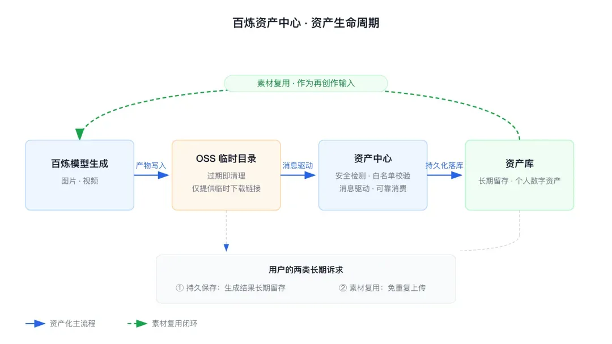
链路特征：消息量大、需可靠消费，且消息流天然按用户组织——每个用户的资产相互独立，要单独安全审核、单独控节奏， 重度用户批量生成时不能拖累他人入库。由此推出三项治理诉求：用户级隔离、用户级限流、用户级挂起。
5.2 传统 Topic 的错位：隔离单元是队列，不是用户
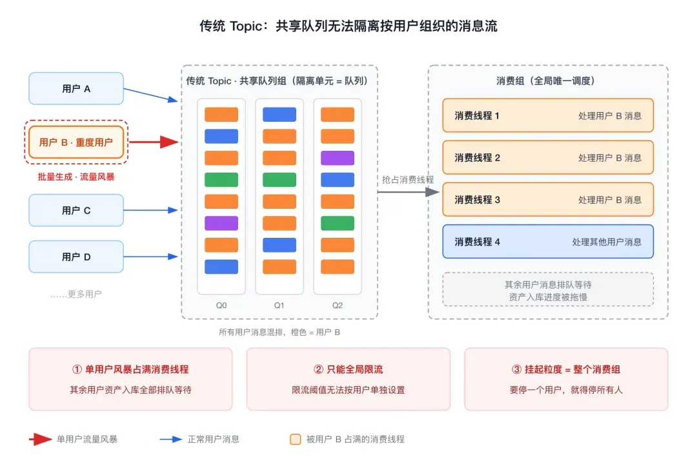
问题的本质一句话：业务的并发单元是"用户"，而传统 Topic 的隔离单元是"队列"，两者错位，所有治理都得靠业务代码补齐—— 在 Topic 之上自建用户路由层和用户级限流，等于在 MQ 之上再造一套 MQ。资产中心文章
5.3 LiteTopic 用法：三侧各一行，业务零自建
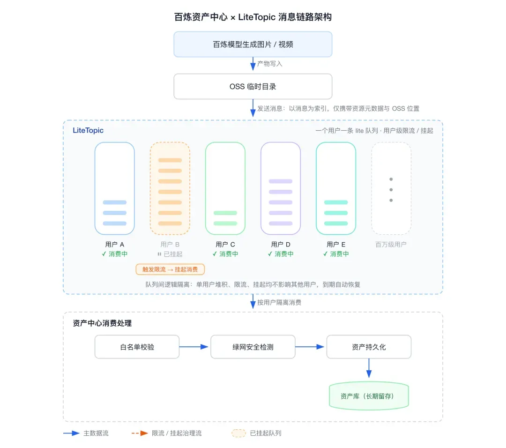
| 侧 | 用法 | 效果 |
|---|---|---|
| 发送侧 | 按用户写入对应 LiteTopic，不存在由 Broker 自动创建 | 无需预建和维护清单 |
| 消费侧 | 一次通配符订阅覆盖全部用户 | 新用户接入零改动 |
| 限流侧 | 消费回调返回挂起指令，Broker 只停该 LiteTopic 投递 | 定向降压，他人不受影响 |
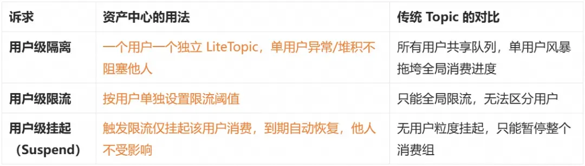
落地价值三点：架构简化（隔离/限流/挂起由消息系统原生提供，零开发成本获得多租户治理）； 稳定性（用户间故障域隔离，单用户风暴通过"限流 + 定向挂起"自动降压，不影响整体 SLA）； 增长零改造（无需预建队列、无需调整订阅，链路随业务自然扩展）。
异步会话网关：让 Agent 不再等待
LiteTopic 的第三种用法：会话级通道。对应周礼分享中的会话网关案例与《Agent 异步会话网关架构书》。
6.1 需求：长任务时代的网关矛盾
Agent 任务分钟级甚至更久，同步等待会耗尽网关连接与线程资源；客户端会断线、网关会宕机、Gateway 与 Worker 需要独立扩缩。 架构书把目标写成九条：连接长期保持、任务异步执行、网关不等待、Worker 不感知客户端所在节点、结果准确回流、流式结果、断线重连、网关故障恢复、两侧独立水平扩展。架构书
核心解耦是三个"生命周期分离"：请求生命周期 ≠ Task 生命周期；Connection（短生命周期）≠ Session（长期业务身份）； Gateway 节点是 Session 的临时承载者，而非永久所有者（Session 可迁移）。
6.2 旧方案七步：广播找人的代价
讲稿中的真实用户旧方案：浏览器连到网关 1 → 任务写入 Redis → 下游轮询 Redis 取任务调大模型 → 结果写入 MQ 的共享 Topic → 网关集群同 Group 订阅，结果可能被网关 2 消费 → 网关 2 推不了连在网关 1 的用户，只能把结果写缓存/数据库，再发广播消息通知全集群 → 网关 1 发现是自己的用户，去缓存取结果 → 推给用户。共七步。周礼分享讲稿
PPT 把旧方案的问题清单列全：流程复杂、依赖组件多、广播无效消费、排查路径长、不支持断连恢复。 注意最后一条——旧架构里客户端断线后没有续传机制，而新架构天然支持（见 6.3）。PPT s13
6.3 新方案三步：以 sessionId 命名的 LiteTopic
新方案：浏览器进网关 1 发起异步任务；网关 1 知道本机有哪些 session，以 sessionId 为名订阅对应 LiteTopic； Worker 处理完把结果写回该 session 的 LiteTopic。无论中间经过怎样的异步过程，结果天然回到持有该 session 的网关 1—— 会话粘性由队列命名保证，不再依赖 Redis/数据库保存中间过程，也去掉广播通知。整个流程简化为三步。周礼分享讲稿
PPT 进一步给出三个精确化细节：① 任务与结果走两条通道——任务提交到任务 Topic，Worker 消费任务 Topic 后把结果写回"对应 Session 名字的 LiteTopic"； ② 网关在 Session 建立时"搜索 Session 匹配的 Topic（或新建）并订阅"，因此无需广播、无需路由表、全连接无状态，且允许多个网关共同订阅同一 Session Topic； ③ 断连恢复支持按 Last-Event-ID / Last-M 精准续传：浏览器重连到网关 2 后，新网关重新订阅同一 LiteTopic(Session1)，从断点处恢复消息数据，继续从上层服务的位置恢复。PPT s14 / s15
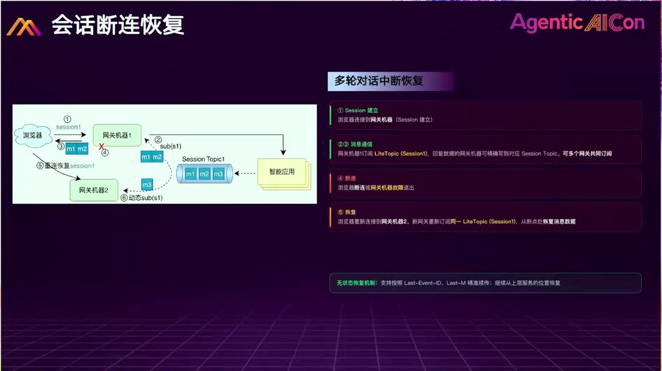
6.4 架构书视角：四个对象与六条高可用原则
架构书把整个网关抽象为四个核心对象：Connection 管客户端网络连接（WebSocket/SSE，节点本地资源）； Session 管长期业务身份（可跨网关迁移）；Task 管一次 Agent 执行；Event 管执行过程与结果 （START / PROGRESS / TOKEN / TOOL_CALL / TOOL_RESULT / FINAL / ERROR）。数据链路：Connection → Session → Task → Agent 执行 → Event → Session → Connection。架构书
六条高可用原则：网关故障不丢 Task；网关重启不重跑已提交 Task；客户端断线不终止后台任务；Worker 与 Gateway 无固定绑定； Session 可跨网关节点恢复；结果始终能通过 Session 找回正确客户端。可观测性统一以 sessionId / taskId / eventId 追踪全链路。
| 架构书概念 | LiteTopic 提供的对应能力 |
|---|---|
| Session 级独立通道 / 会话粘性 | 以 sessionId 命名 LiteTopic，结果天然回流到订阅者 |
| Gateway 只接收自己的 Session | 差异化订阅：每台网关只订本机持有的 session 子集 |
| 故障恢复不丢事件、不重跑任务 | 消息持久化 + 重订阅后从偏移续读（断点续传） |
| Gateway / Worker 独立扩缩 | 百万级轻量队列 + 通配/按需订阅，两侧无节点绑定 |
系统间异步协作：OpenClaw Channel 与协议设计
LiteTopic 的第四种用法：把消息作为两个 AI 系统之间的桥梁，从"人助理"升级为"企业级消息处理节点"。
7.1 从 人→IM→Agent 到 系统→MQ→Agent
传统 OpenClaw 玩法是人通过 IM（Telegram、微信、钉钉等）与个人助理交互。团队的尝试是让两个系统之间、或个人系统与 OpenClaw 之间、 或两个 OpenClaw 之间通过 RocketMQ 做异步任务交互——交互方式是异步的、协议化的，而非自然语言。周礼分享讲稿
机器间交互需要明确协议。PPT 给出了完整的消息信封（Message Envelope）与消息类型定义：PPT s21
| 字段 | 类型 | 说明 |
|---|---|---|
| message_id | string | 全局唯一消息标识 |
| session_id | string | 会话 ID → 映射 LiteTopic |
| source_agent / target_agent | string | 发送方 / 目标 Agent 标识（目标可为通配） |
| msg_type | enum | 消息类型（见下表） |
| timestamp | int64 | 发送时间戳（ms） |
| payload | bytes | 业务载荷（JSON/Protobuf） |
| trace_id | string | 分布式追踪链路 ID |
| priority | int32 | 消息优先级（0–9） |
| ttl | int64 | 消息生存时间（ms） |
| 消息类型 | 方向 | 用途 |
|---|---|---|
| TASK_REQUEST / TASK_RESPONSE | A→B / B→A | 任务下发 / 执行结果返回 |
| STREAM_CHUNK / STREAM_END | B→A | 流式推理分片输出 / 结束标记 |
| HEARTBEAT / STATE_SYNC | A↔B | Agent 存活探测 / 会话状态同步 |
| ERROR | Any | 异常 / 超时通知 |
| CANCEL | A→B | 取消进行中的任务 |
实现流程为：
- 上游外部系统发一条消息到 RocketMQ 的 Inbound Topic（其下按身份挂 LiteTopic）；
- OpenClaw 的 RocketMQ Channel 以"自己的身份"（一个 LiteTopic 名字）订阅对应队列——纯事件驱动；
- Connection Layer 做去重（Dedup Module），进入 Message Handler，按消息内容组装 OpenClaw 的 session key（Session Routing），交给 session 路由处理；
- OpenClaw 处理完通过 Reply Dispatcher 调 Channel 的 Messaging Service；
- Messaging Service 把结果发到回复通道（
replyTopic+replyTarget，即下游的 LiteTopic）：下游是工作流则继续下发，是回写上游则完成多轮任务交互。
PPT 给出五个应用场景卡片：Ticket 智能工单与流程自动化（Jira/ServiceNow 新工单 → Agent 分析内容、识别优先级、分派团队、生成初步方案并回写）； Monitor 实时数据监控与智能告警（Prometheus/Grafana 告警事件 → 根因分析、关联历史、生成处置建议 → 值班群通知，从"告警通知"到"智能诊断"）； RAG 知识库自动更新与增强（文档新增/更新 → 解析、分块、向量化 → 更新 RAG 索引）； ETL 跨系统业务编排与数据 ETL（ERP/CRM/WMS 事件驱动清洗、转换、补全、校验，替代硬编码 ETL）； Multi-Agent 协作调度中心（主控 Agent 拆解任务经不同 Topic 分发给代码/数据/文档等专业 Agent，完成后消息回传汇总）。PPT s23
关键工程立场：没有改任何一行 OpenClaw 代码，全部基于其开放的 channel 接入点在外侧实现——轻量地完成两个 Agent 之间的任务下发、结果回写、生命周期与上下文管理，类似 Google A2A 协议的实现流程。
7.2 现场 Q&A：与 Matrix / NATS 的定位差异
- vs HiClaw 的 Matrix：Matrix 偏业务层（聊天室/room 概念、HTTP 模型），LiteTopic 更底层、只做通信基础设施；两者不竞争且可结合——HiClaw 目前用对象存储轮询事件（低效），未来可改为消息通知机制。
- vs NATS：讲者建议直接实测对比；LiteTopic 的设计目标是支撑十万到百万会话规模（集团双十一数亿 QPS 的分布式系统经验），几千到十万队列规模下内存开销与传统基本无区别。
- vs MCP task 轮询：MCP 自己承认轮询不是终态——面对运行数小时数天的任务轮询成本太高，演进方向是异步推送，与 LiteTopic 的事件驱动一致。
总结、自测与参考资料
8.1 一张表回顾四种用法
| 场景 | 隔离/命名单元 | 关键机制 | 收益 |
|---|---|---|---|
| 百炼网关限流 | User + Model | 漏桶矩阵 + Suspend 调速 + 通配订阅 | 限流比降 10×；成本乘法→加法 |
| 资产中心治理 | User | 一人一 Topic + 定向挂起 | 零自建路由/限流层；增长零改造 |
| 异步会话网关 | Session | session 命名通道 + 差异化订阅 + 持久化续读 | 会话粘性天然成立；去广播去缓存；宕机可恢复 |
| 系统间协作 | Agent 身份 | 协议化消息 + 事件驱动 channel | 不改 Agent 代码实现 A2A 式协作 |
8.2 设计决策回顾（面试口径）
- 为什么固定窗口 + 漏桶？固定窗口对短期波动宽容、适合配额硬上限；漏桶匀速放行契合 GPU 稳态友好尖峰敏感；令牌桶允许突发恰是 GPU 最怕的。
- 为什么漏桶外置到 MQ？进程内队列会被超大客户突发压垮网关；外置把"接住"与"放行"物理拆开。
- 为什么是 LiteTopic 而不是传统 Topic？三问：百万级队列？运行时按需创建？流控粒度到单队列？传统 Topic 全否，LiteTopic 全是。
- 为什么 Suspend 而不是 Sleep？谁为等待买单：Sleep 占客户端线程会传染；Suspend 由 Broker 暂停拉取、线程立即释放，保证多租户公平。
- 为什么 Ready Set？百万订阅下逐队列轮询开销线性增长；epoll 式就绪集合让开销只与活跃队列数成正比，代价是内存换时间。
8.3 自测十题（点击展开答案）
1. GPU 场景为什么选漏桶而不是令牌桶？
2. 为什么用固定窗口而不是滑动窗口做基础限流？
3. 漏桶为什么必须从进程内搬到进程外？
4. 传统 Topic/Group 做平台级漏桶的三个痛点？
5. Suspend 与 Sleep 的本质区别是什么？
6. Ready Set 解决什么问题？类比什么？代价是什么？
7. "同一个原语，两种用法"指什么？
8. 会话网关旧方案为什么需要广播？新方案如何去掉？
9. 单个 LiteTopic 写入峰值不够怎么办？消费并发呢？
10. 网关宕机后如何既不重复执行任务又拿回结果？
8.4 术语表
| 术语 | 解释 |
|---|---|
| LiteTopic / Parent Topic | RocketMQ 5.x 轻量队列，挂在父 Topic 下；按需创建、TTL 回收、百万级规模 |
| 差异化订阅 | 同 Group 内不同实例订阅不同 LiteTopic 子集，不破坏一致性 |
| Suspend N | 消费回调返回的挂起指令：Broker 暂停该队列拉取 N 毫秒，线程立即释放 |
| Ready Set | Broker 侧每客户端就绪集合，epoll 式事件驱动拉取 |
| 队头阻塞 | FIFO 下队头慢消息阻塞其后所有消息 |
| 会话粘性 | 同一 session 的请求与结果落在同一通道/节点 |
| 漏桶 / 令牌桶 | 匀速流出整形 / 攒令牌允许突发 |
| 集群消费 / 订阅一致性 | Group 内分摊队列；组内订阅集合必须相同（传统模型） |
| SPI / Pod | 服务提供接口（插件扩展点）/ K8s 最小部署单元 |
| MCP / A2A | 模型-工具连接协议 / Agent 间协作协议 |
| SSE / WebSocket | 两种服务端推送长连接方式 |
| TTL | 存活时间：不活跃超时自动回收队列 |
| NameServer / Broker | 无状态路由注册中心 / 消息存储转发服务器（Master-Slave） |
| CommitLog / ConsumeQueue | 混合顺序写的消息体文件 / 按队列的消费索引（20 字节条目） |
| Offset / rebalance | 消费进度坐标 / Group 内实例分队列的周期重算（4.0） |
| 重试 / 死信主题 | %RETRY%+Group 退避重投；默认 16 次失败入 %DLQ%+Group |
8.5 参考资料
- 百炼网关实践：用 RocketMQ LiteTopic 让限流比降了 10 倍（不铭、文婷、稚柳，阿里云云原生公众号 / 开发者社区，2026-07-10）—— 第 1–4 章主要来源
- 百万用户，一人一 Topic：百炼资产中心用 RocketMQ LiteTopic 实现隔离与限流（张世杰·靖泉，2026-09-09）—— 第 5 章来源与配图
- 周礼《让 AI Agent 不再等待：基于 RocketMQ 的异步协作架构实战》，Agentic AICon 智能体应用与架构工程大会（2026-08-15，本地
分布式网关/）—— 讲稿全文通读 + 23 页视频 PPT 逐页看图核对；第 1、3、6、7 章来源与 Q&A 数据 - 《Agent 异步会话网关项目架构书》（本地
分布式网关/总结.md）—— 第 6 章对象模型与高可用原则 - 智能体构建与进化——Agent 开源开发者沙龙 · 报告 3《RocketMQ LiteTopic 实践案例》PPT —— 四特性、四适配、插件抽象
- RocketMQ for AI 官方方案页 · 钉钉交流群 110085036316